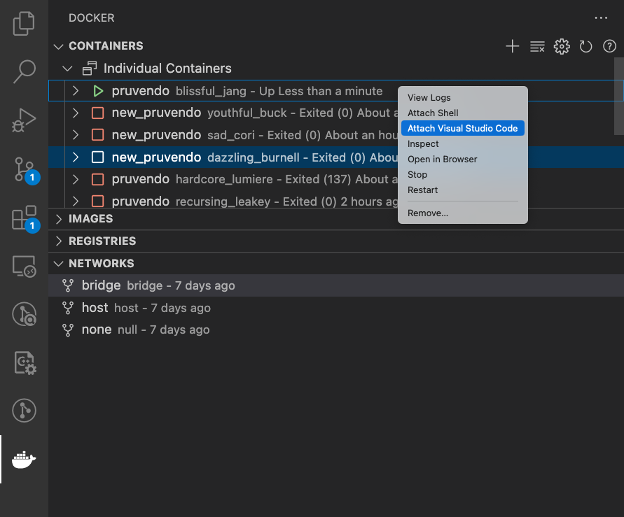

Introduction
Here is describing Ursus. Ursus is language which is embeded to Coq. This language was created for describing solidity smart contracts. It has some key features such as: easy descirbing and understanding logic of programs, translators (from/to solidity). Ursus is interesting as lanaguage because it allows you to write smart contracts verification driven development (for example, ursus code -> verification -> translation to solidity -> deploy).
Installation
Here is 2 way to install needed lib for using Ursus.
- Manual way with installing Coq, each Pruvendo libs and 3rd parties via opam [1].
- Docker way, which consist using docker image with already installed Coq, Pruvendo libs and so on.
Opam
Opam is "a source-based package manager for OCaml. It supports multiple simultaneous compiler installations, flexible package constraints, and a Git-friendly development workflow" [1].
Here is some usefull commands:
- Opam allows you to manage several version of ocaml compiler version.
- For creating new "switch" (your branch of several compiler versions) with certaing version use
> opam switch create ocaml.your_version - For checking all of your "switches" try
> opam switch list # switch compiler description awesome_name ocaml-base-compiler.num description → default ocaml.4.11.2 default
- For creating new "switch" (your branch of several compiler versions) with certaing version use
- Other key features of opam package manager are installing and managing ocaml/coq package (coq is lib too):
-
If you want install,uninstall published package try respectively:
> opam install awesome_package.version> opam uninstall awesome_package.version -
If you want install,uninstall unpublished/local package try respectively:
> cd awesome/package/folder> opam install .> opam uninstall . -
For watching already installed packages try:
> opam list # Name # Installed # Synopsis atd 2.10.0 Parser for ... ...
-
Coq
Coq is "a formal proof management system. It provides a formal language to write mathematical definitions, executable algorithms and theorems together with an environment for semi-interactive development of machine-checked proofs." [1]
Coq can be considered as ocaml package (actually it is), which can be installed via opam:
> opam pin add coq 8.17.1
Full guide is here.
Pruvendo libraries
Using Ursus requires installing numerous Pruvendo packages. Such as:
- coq-finproof-base
- pruvendo-base-lib
- coq-elpi-mod (modified by Pruvendo version of coq-elpi package)
- solidity-monadic-language
- ursus-standard-library
- pruvendo-ursus-tvm
- ursus-contract-creator
- ursus-environment
- ursus-quickhick
These packages requires several others packages:
- coq-mathcomp-zify
- coq-quickchick.1.6.4
Main script for installing whole environment (all package folders need to be in the same folder):
opam pin add coq 8.16.0 -y
cd coq-elpi-mod && opam install .
cd ../coq-finproof-base && opam install .
cd ../pruvendo-base-lib && opam install . -y
cd ../coq-elpi-mod && opam install . --ignore-pin-depends
cd ../solidity-monadic-language && opam install . -y --ignore-pin-depends
opam repo add coq-released https://coq.inria.fr/opam/released && opam install coq-mathcomp-zify
cd ../ursus-standard-library && opam install . -y --ignore-pin-depends
cd ../pruvendo-ursus-tvm && opam install . -y --ignore-pin-depends
cd ../ursus-contract-creator && opam install . -y --ignore-pin-depends
cd ../ursus-environment && opam install . -y --ignore-pin-depends
opam install coq-quickchick.1.6.4 -y
cd ../ursus-quickchick && opam install . -y --ignore-pin-depends
Ursus Docker Image
Docker is a set of platform as a service (PaaS) products that use OS-level virtualization to deliver software in packages called containers.[1]
Before before interaction you probablly have got tar (let call it pruvendo.tar) file with needed lib packaging into Docker image.
Therefore first step for working in the container is
> docker load < pruvendo.tar
And we can see it using
> docker images
REPOSITORY TAG IMAGE ID CREATED SIZE
pruvendo latest bdd... ... 3.59GB
Ok, let's run it :) where
docker run -p 81 -it --entrypoint=/bin/bash pruvendo
- -p remote port
- -it interactive mode
As said before pruvendo images consist of built coq libs and some example project (which called now preuvendo-erc20)
Of cource we can use container as dev area for our manipulation. For example, we could use VS Code for this goal.
- Install Docker extension
- do
docker run -p 81 -it --entrypoint=/bin/bash pruvendo - Attach Visual Studio Code 
- After that new window with this project appear which allow you to do something
Usefull tips:
- Allow write/read in the container
sudo chown -R username /path/to/working/directory
where username is coq
- VS Code allows to install VSCoq into the container and use it, but it doesn't it will ask you path which contains Coq bin default is
/home/coq/.opam/4.13.1+flambda/bin/or you can ask
> which coqc
/home/coq/.opam/4.13.1+flambda/bin/coqc
If which coqc doesn't work, so you probably need set env variables via
> source ~/.profile
Quick start
This part of documentations requires to install Coq, Preuvendo libs and so on [1]. Here is a describing how to write a simple contract via Ursus lang.
Writing simple contract
Let's look to the simple contract erc20, which were written via Ursus.
Require Import UrsusEnvironment.Solidity.current.Environment.
Require Import UrsusEnvironment.Solidity.current.LocalGenerator.
Require Import UrsusContractCreator.UrsusFieldUtils.
Require Import IERC20.
Module ERC20.
#[translation = on]
#[language = solidity]
#[Contract = ERC20Contract]
Contract ERC20 ;
Sends To IERC20;
Types ;
Constants ;
Record Contract := {
totalSupply: uint256;
balanceOf: mapping ( address )( uint256 );
allowance: mapping ( address )( mapping ( address )( uint256 ) )
}.
SetUrsusOptions.
UseLocal Definition _ := [
boolean;
address;
uint256;
(* added *)
(mapping address uint256)
].
#[override, external, nonpayable, returns=_result]
Ursus Definition transfer (recipient : address) (amount : uint256): UExpression ( boolean) false .
{
::// balanceOf[msg->sender] := balanceOf[msg->sender] - amount .
::// balanceOf[recipient] := balanceOf[recipient] + amount .
::// send IERC20.Transfer(msg->sender, recipient, amount)
=> msg->sender
with {InternalMessageParamsLRecord} [$ {2} ⇒ {Message_ι_flag} $] .
::// _result := @true |.
}
return.
Defined.
Sync.
(*...*)
EndContract Implements.
End ERC20.
First part of describing contract is require needed Pruvendo libs.
Require Import UrsusEnvironment.Solidity.current.Environment.
Require Import UrsusEnvironment.Solidity.current.LocalGenerator.
Require Import UrsusContractCreator.UrsusFieldUtils.
Next is importing file with describing Interface IERC20.
Require Import IERC20.
Next command is Contract, which should be in the module with the same name.
#[translation = on]
#[language = solidity]
#[Contract = ERC20Contract]
Contract ERC20 ;
Sends To IERC20;
Types ;
Constants ;
Record Contract := {
totalSupply: uint256;
balanceOf: mapping ( address )( uint256 );
allowance: mapping ( address )( mapping ( address )( uint256 ) );
}.
Attributes tells information about Contract: is needed tranlsation to Solidity, what is translating lang, name of raw term in Coq
#[translation = on]
#[language = solidity]
#[Contract = ERC20Contract]
Next one is command itself, which requires such as inforamation as:
- Block
describes information what interfaces are used in the contract.Send to InterfaceName1 Interface2 ... ; - Block
declares new structures which are used in the contract.Types Record StructName1 := StructName1 { fieldName : type; ... } Record StructName2 := StructName2 { fieldName : type; ... } ...; - Block
declares constants which are used in the contract.Constants Definition constName1: constType1 := constValue1 Definition constName2: constType2 := constValue2 ... Definition constNameN: constTypeN := constValueN ; - Block
describes fields of current contract.Record Contract := { totalSupply: uint256; balanceOf: mapping ( address )( uint256 ); allowance: mapping ( address ) ( mapping ( address )( uint256 ) ); }.
Then tecknical command SetUrsusOptions. comes.
Important here is command UseLocal, more precisely
UseLocal Definition _ := [
boolean;
address;
uint256;
(mapping address uint256)
].
it declares local variables types, which will be used in functions below.
(Important !) Arguments type, return type, type of declaring variables must be in UseLocal list!
Now let's look how we can describe function here. Example is
#[override, external, nonpayable, returns=_result]
Ursus Definition transfer (recipient : address) (amount : uint256): UExpression ( boolean) false .
{
::// balanceOf[[msg->sender]] := balanceOf[[msg->sender]] - amount .
::// balanceOf[[recipient]] := balanceOf[[recipient]] + amount .
::// send IERC20.Transfer(msg->sender, recipient, amount)
=> msg->sender
with {InternalMessageParamsLRecord} [$ {2} ⇒ {Message_ι_flag} $] .
::// _result := @true |.
}
return.
Defined.
Sync.
Main command is Ursus, which inputs some Definition. Attributes #[override, external, nonpayable, returns=_result] are the same as solidity has.
(Important !) Arguments type, and return type MUST BE in the UseLocal list!
After switching Custom foo description
to Proof mode 2 goals is here:
UExpression ( boolean) falseIt's main body of function, description of it is there oops TODOIReturnExpressiongoal solves via tacticreturn.orreturn some_term.. It has ususal semanthic like in some imperative languages.Defined.is standart Coq command.Sync.is needed for fast interpreting.
Compiling Ursus and extraction to Solidity.
TODO
Compiling and deplying Solidity
TODO
Before reading it would be useful to check Quick Start.
The interfaces in the contract file itself have the same structure as in a separate file:
Key word 'Interfaces.'
Key word 'MakeInterface' key word 'Class' IntefaceName ':='
'{'
Function1Name ':' Carryed List of Arguments Types '->' AccessRights ReturnType ['true', 'false'] ';'
Function2Name ':' Carryed List of Arguments Types '->' AccessRights ReturType ['true', 'false'] ';'
...
'}'
Key word 'EndInterfaces.'
For example:
Let the Solidity interface look like this (Ursus can model this language):
interface IVestingPool {
function claim(uint poolId, address addr) external;
function get() external view returns(uint poolId, address poolCreator);
}
Then on Ursus it is written like this:
Interfaces.
MakeInterface Class IVestingPool :=
{
claim : uint -> address -> external PhantomType true ;
get : external (uint ** address) false ;
}.
EndInterfaces.
The modificators 'true' and 'false' see in functions file. These marks (true and false in the return types) show possibility of calling require in this function or in calling here function. Using of interface you can see there and there.
As said in Quick Start (please check, if you don't know what is going on here), Contract command looks like:
'Contract' command
Let's consider syntax of basic 'Contract' command, which allows introducing contract description on Ursus lang.
'Contract' ContractName ';'
'Send To' InterfaceName1 InterfaceName2 ';'
'Types'
'Record' Name1Record ':= {'
Name1RecordMemberName ':' Type1 ';'
Name1RecordMemberName ':' Type2 ';'
...
NameNRecordMemberName ':' TypeN
}
'Record' Name2Record ':= {'
...
}
...
'Record' NameLastRecord ':= {'
...
}
';'
'Constants'
'Definition' Constant1Name ':' Type1 ':=' value1
'Definition' Constant2Name ':' Type2 ':=' value2
...
'Definition' ConstantLastName ':' TypeLast ':=' valueLast
';'
'Record Contract' ':= {'
'#[' AccessRights ']' Name1ContractMember ':' Type1 ';'
'#[' AccessRights ']' Name2ContractMember ':' Type2 ';'
...
NameNContractMember ':' TypeN
'}.'
For example:
Contract MultisigWallet ;
Sends To Itmp ;
Types
Record Transaction := {
Transaction_ι_id : uint64;
Transaction_ι_confirmationsMask : uint32;
}
Record UpdateRequest := {
UpdateRequest_ι_id : uint64;
UpdateRequest_ι_index : uint8;
UpdateRequest_ι_signs : uint8;
trans : (_ResolveName "Transaction");
};
Constants
Definition FLAG_SEND_ALL_REMAINING : uint8 := 128
Definition FLAG_IGNORE_ERRORS : uint8 := 2
;
Record Contract := {
#[static] _pubkey : uint256;
#[static] _foo : uint256;
m_requiredVotes : uint8;
m_defaultRequiredConfirmations : uint8;
last_transaction : (_ResolveName "Transaction")
}.
Let's consider more precisely this command with each section:
- After keyword
Contracthere is name of the described contract - Keyword
Sends Tois used to declare which interfaces are used for sending messages. - Keyword
Typesis used to declare new strutures that will be used below. - Keyword
Constantis used to declare constants, which will be used in the contract. Important to mention that value, which will be assignment here must be literal. - Record
Contractcontains fields of the contract, which can have attribute#[public],#[static]or nothing. It's important(!) to use custom type/structures here with wrapper_ResolveNamebecauseContractcommand doesn't know such types before creating all notations.
This part was expressed in Quick Start too.
After command Contract it needs to use command SetUrsusOptions. and UseLocal ... . In the UseLocal list important to notice that customtypes must be used with special name. For example, if you have structure name Foo, you need to use FooLRecord name.
Next is going to describe function and modifier declaration, but there.
End of declaring contract comes with two command EndContract Implements Interface1 Interface2 ... . and End ContactName. where:
- ContractName is module name, which this contract located;
- Interface1 and Interface2 are implemented interfaces, which means that signatures and function names from these interfaces are the same as in folowing interfaces.
In the last version is possible to create interface using signatures of declared contract via command EndContract ImplementsAuto.
Read there for getting information about built-in types in Ursus.
Types, primitives and literals
Ursus types are listed in the following table:
Built-in types:
| type | Description | Literals |
|---|---|---|
int | signed int | {0}, {-1}, {1}, ... |
int8 | signed int for 1 byte | {0}, {-1}, {1}, ... |
int16 | signed int for 2 bytes | {0}, {-1}, {1}, ... |
int32 | signed int for 4 bytes | {0}, {-1}, {1}, ... |
int64 | signed int for 8 bytes | {0}, {-1}, {1}, ... |
int128 | signed int for 16 bytes | {0}, {-1}, {1}, ... |
int256 | signed int for 32 bytes | {0}, {-1}, {1}, ... |
uint | unsigned int | {0}, {1}, ... |
uuint8 | unsigned int for 1 byte | {0}, {1}, ... |
uint16 | unsigned int for 2 bytes | {0}, {1}, ... |
uint32 | unsigned int for 4 bytes | {0}, {1}, ... |
uint64 | unsigned int for 8 bytes | {0}, {1}, ... |
uint128 | unsigned int for 16 bytes | {0}, {1}, ... |
uint256 | unsigned int for 32 bytes | {0}, {1}, ... |
listArray a or a[] | array of a type element | array ( x ; y ; ... ; z) |
listVector a | vector of a type element | TODO |
string | basic string type | {"something"} |
boolean | bool type | TRUE |
optional a | option type (see there) | some(x) |
bytes | the same as string | {"something"} |
mapping a b | hash-map type | TODO |
queue | queue of uint elements | TODO |
tuple a b or a**b or a*b | type of pair | [ x , y ] or [ x , y , z ] |
TvmCell | for Everscale (see there 1.1.3) | TODO |
TvmSlice | for Everscale (see there 1.1.3) | TODO |
TvmBuilder | for Everscale (see there 1.1.3) | |
address | TODO | [ x , y ] |
User types
Here is explained how to create your own structure via using Pruvendo tools. For example you want to create structures, which can be describe like:
struct Person {
string name;
string surName;
uint age;
}
Ok, now we can create the folowing structure in Ursus:
Inductive PersonFields :=
| Person_ι_name
| Person_ι_surName
| Person_ι_age
.
Definition PersonL := [string : Type ; string : Type ; uint : Type]%glist.
GlobalGeneratePruvendoRecord PersonL PersonFields.
And using command GlobalGeneratePruvendoRecord we can create new type, which will be called in this example as PersonLRecord. Literal can be expressed like [{"John"}, {"Smith"}, {42}].
Finally, let's sat that way of expressing structures is not recomended, so it is better to use Contract command which expressed here
Function declaration
Every function mostly is declared via using proof mode in Coq and command Ursus. Let's see how to declare function.
#[attribute1, attribute2..., returns=returnName]
Ursus Definition functionName (arg1:type1) ... (argN:typeN): UExpression returnType ErrorMark.
Where:
Ursusis already mentioned command which inputsDefinition.functionNameis name of declaring function.(arg1:type1) ... (argN:typeN)are arguments, whereargIandtypeIare argument name and argument type of ith argument.- returnName and returnType are "variable name" and type of returning term/object respectively.
attributeIis attribute with the same semanthic as solidity has. Moreover, not only the attributes of solidity functions are available here. Also here is attributeno_body, which means following statement: term of typeUExpression...doesn't exist. So, as mentioned in QuickStart here is 2 goals in proof mode in declaring Ursus function, but with attributeno_bodyonly one goal (IReturnExpression) needs to be declared ("solve").- Finally,
ErrorMarkis actually either true or false term, which expresses if it contains calling require, revert and others "bad" functions here.
After swithing to proof mode two goals are here: UExpression returnType ErrorMark and IReturnExpression.
Conception of ULValue and URValue
ULValue and URValue types of terms that are used in describing function bodies: function callings, assignment and so on. Simply, we can consider ULValue as "reference type" or things that can be assigned a value. We can consider URValue as usual type or things that can't be assigned a value. ULValue can automatically cast to URValue via Coq coercion mechanism. In Ursus we can't use literal itself, we need to wrap it into URValue, so for this goal we can use brackets {...}. For example, "str" of Coq type string now is → {"string"} of type URValue string false. ULValue has type Type -> Type and URValue has type Type -> bool -> Type. Term of type bool has similar semanthic as UExpression... has.
Example is below.
Create term with hole approach
Let's look at basic scenario of describing function (without loops and if statements)
Basic syntax of function body can be introduced via next BNF:
UExpression ::= // simpleUExpression // | // (UExpression ; UExpression) //
i.e function body can be expressed this way:
// simpleUExpression ;
(simpleUExpression ;
(simpleUExpression ;
simpleUExpression)) //
And main idea is using standart tactic refine, so the description will take the following form:
refine // simpleUExpression ; _ // .
refine // simpleUExpression ; _ // .
refine // simpleUExpression ; _ // .
refine // simpleUExpression // .
Where:
- '
_' symbol means, that rest of term is needed to construct. // ... //"brackets" means only some special construction might be here
Firstly, consider next simpleUExpression:
-
declaring "variable"
new 'name : typeName @ "name" := valueWhere:
nameis variable name (notice!nameand "name" must be the same)typeNameis type of this variablevalueis term of typetypeName
-
function
a + b, which has usual semanthic, (aandbare num with the same type, for exampleuint) -
assignment
variable := termWhere:
- variable is "variable", which was declared before asignment
- term is variable or function
For example, consider our first Ursus function:
#[pure, returns=_result]
Ursus Definition addOne (y : uint) : UExpression uint false.
refine // new 'x : uint @ "x" := {1} ; _ //.
refine // y := y + x ; _ //.
refine // _result := y // .
return.
Defined.
Sync.
it will be prettier to rewrite in such way via using goal separator {...}:
#[pure, returns=_result]
Ursus Definition addOne (y : uint) : UExpression uint false.
{
refine // new 'x : uint @ "x" := {1} ; _ //.
refine // y := y + x ; _ //.
refine // _result := y // .
}
return.
Defined.
Sync.
Nice!
Consider custom tactic ::, it works like refine, but here is some features to reduce code. Now we can declare variable with the same semantic, but with new syntax var name : typeName := value
And consider new way of declaring statements via using next notations:
'//' e ';' _ '//'→'//' e'//' e '//'→'//' e '|'
Where 'e' is term of UExpression... type.
And our code become look like this:
#[pure, returns=_result]
Ursus Definition addOne (y : uint) : UExpression uint false.
{
::// var 'x : uint := {1} .
::// y := y + x .
::// _result := y |.
}
return.
Defined.
Sync.
Why should we still use construction new ..., there is one reason var ... doesn't allow to write code in one "piece":
#[pure, returns=_result]
Ursus Definition addOne (y : uint) : UExpression uint false.
refine // new 'x : uint @ "x" := {1} ; y := y + x ; _result := y //.
return.
Defined.
Sync.
How we can use Ursus function below?
Let's consider use case of addOne function.
For example:
::// var new_y: uint := addOne(y);_|.
Where y is URValue uint ... or ULValue uint, which was casted to URValue uint false.
ULValue-URValue
In example above, consider type of each term are used here (or what would say coq proof mode):
y: ULValue uintx: ULValue uint{1}: URValue uint false_result: ULValue uint(coq get this type fromUExpression uint falsereturn type)
Basic construction
Let's look to full simpleUExpression list:
-
assignment
// a := b, whereaandbhave the same type, butaisULValueandbisURValue:ais variable or field of contract or structurebis variable or result of function or field of contract or structure- Operations with assignment. Here is list of available operations with assignment with standart semantic:
x += y,x -= y,x &= y,x |= y,x /= y,x *= y,++ x,x ++,x --,-- x,
Where:
xisULValueandyisURValue -
declaring new varibale
// new 'x : ty @ b := r ; _ |(deprecated),Where:
xis name of variable (important! to use symbol "'")tyis type of variablerris value with typeURValue..._is rest ofUExpressionwhich needs to construct Notice, This way of declaring variable allows to create UExpression withoutrefineor::tactic. After this statement,xwill have typeULValue ty.
-
declaring variables as tuple
// new ( x1 : ty1 , x2 : ty2 ) @ ( xb1 , xb2 ) := r ; _ |"Where:
x1andx2are name of variablety1isty2are type of variablexb1,xb2are strings of namex1andx2respectivelyris value with typety1 ** ty2
-
declaring variable (works only with
::) as tuple// var ( x1 : ty1 , x2 : ty2 ) := r ; _ |Where:
x1andx2are name of variablety1isty2are type of variableris value with typety1 ** ty2
-
declaring variable (works only with
::) as tuple// var x1 : ty1 , x2 : ty2 ; _ |(the same as previous bullet point, but value us default for each type)
After these (point 3,4,5) statement, x1 and x2 will have type ULValue ty1 and ULValue ty2 respectively.
-
calling Ursus function
// function (arg1,...,argN),Where
functionis Ursus function or Ursus Defintion, which was declared above.- arguments
arg1,...,argN, whereargIis result of some function or variable (has typeURValue...)
Complex construction
Consider contruction, which has "body", i.e. consist of another UExpression. We have already worked with it via using // _ ; _ //.
-
First will be if-statement
if x then { y } else { z }xis term with type boolean (URValue boolean mark).markis false or true.yandzhave type the same as type of term, whose part is this if-statement;
For example consider, our old function
#[pure, returns=_result] Ursus Definition addOne (y : uint) : UExpression uint false. { ::// var 'x : uint := {1} . ::// if (x < y) then { ->\> } else { ->\> }. { ::// y := y + x |. } { ::// y := x + y |. } ::// _result := y |. } return. Defined. Sync.Let's consider line
::// if (x < y) then { ->\> } else { ->\> }.before interpreting this line we have one goalUExpression ..., after that we give to this goal expressionif x < y then { ->\> } else { ->\> }and for defining this expression we need to give 2 part of if-statement: true-body and false-body. Notation->\>means{ _ : UExpression ...}(placeholer basicaly, which means that we need define this term below). So after interpretting this constructions we have three goals: true-body, false-body, rest of function. And in the example these "bodies" are: 3. true-body is::// y := y + x |.4. false-body is::// y := x + y |.5. rest of function is::// _result := y |. -
Consider
if x then { y }if-statement. It is the same as the previous point, but here we don't need to define false-body (false-body is void actually here). -
Consider
while b do { f }while-statement with usual semanthic from imperative language,Where
bis term with type boolean (URValue boolean mark).markis false or true.fisUExpression(let's call it while-body)
-
Consider
doWhile b { f }do-while-statement or do-repeat-statement with usual semanthic from imperative language, Wherebis term with type boolean (URValue boolean mark).markis false or true.fisUExpression(let's call it do-while-body)
-
Consider
for (var x : ty := r , b , after ) do { f }for-statement is syntax sugar of this expression:// var x : ty := r ; while ( b ) do { f ; after }- So, we can do something with
xin bodyf
- So, we can do something with
-
Consider
for ( [ k , v ] in m ) do { f }for-each-expression, which has next semanthic in case of typem:- Let
mof typemapping keyType valueType, so on body expression variablekandvare aviable infbody,
Where
kandvarekeyandvaluetype, respectively. It iterates for each key and value of this mapping 2. Letmof typeA[],Where
kandvareuintandAtype, respectively. It iterates for each index and value of arrayA[]3. So, we can do something withkandv, they have typesULValue keyandULValue valuerespectively in bodyf. - Let
-
Consider
for ( [ k , v ] in m ; cond ) do { f }for-each-expression with condition has the same semantic as the previus one, but iteration can break if conidtioncondisn't satisfied.- So, we can do something with
kandv, they have typesULValue keyandULValue valuerespectively in bodyf.
- So, we can do something with
-
Consider
for ( v in m ) do { f }yet another version of for-each-expression, which has next semanthic in case of typem: -
Let
mof typemapping keyType valueType, so on body expression variablevis aviable infbody,
Where v has value type. It iterates for each value of this mapping
2. Let m of type A[],
Where ```v``` has ```A``` type. It iterates for each value of array ```A[]```
- So, we can do something with
v, it has typeULValue valuerespectively in bodyf. - Consider
for ( v in m ; cond ) do { f }for-each-expression with condition has the same semantic as the previus one, but iteration can break if conidtioncondisn't satisfied.- So, we can do something with
v, it has typeULValue valuerespectively in bodyf.
- So, we can do something with
How to model modifiers?
Ursus can model modifiers as simple void function (let's call it as modifier_example), i.e. term with the next type: type1 -> ... -> typeN -> UExpression PhantomType false or type1 -> ...-> typeN -> UExpression PhantomType true.
And modifier invocation will use like this in Ursus function:
Ursus Definition some_function:UExpression PhantomType false.
::// modifier_example() ;_|.
{
...
}
return.
Defined.
Localstate (or state of local variables, which are used in Ursus functions in contract)
It would be useful to read Quick Start before. In Quick Start we mentioned command UseLocal, which input is Definition of list of types. So LocalState is special container of term with these types.
We can operate with LocalState only via using command UseLocal.
SuperLedger
Basic ursus functions
Operations with mapping
Consider terms with name and type such as:
m: URValue (mapping keyType valueType)
k: URValue (keyType)
Mapping functions:
fetch returns value of key k in mapping m.
\\ m->fetch(k) \\ : URValue (optional valueType)
Piece of example:
::// var val: optional uint := uint_to_uint_dict->fetch({3}) ;_|.
exists returns whether key k exists in the mapping.
\\ m->exists(k) \\: URValue boolean
Piece of example:
::// var val: boolean := uint_to_uint_dict->exists({3}) ;_|.
set sets the value associated with key and returns update mapping
\\ m->set(k, v) \\: URValue (mapping keyType valueType)
Piece of example:
::// var new_map: mapping uint uint := old_map->set({3}, {3}) ;_|.
delete deletes the value associated with key and returns update mapping
\\ m->delete(k) \\: URValue (mapping keyType valueType)
Piece of example:
::// var new_map: mapping uint uint := old_map->delete({3}) ;_|.
min returns mininum in the list of keys (< must be defined for keyType)
\\ m->min() \\: URValue (optional keyType)
Piece of example:
::// var minimum: optional uint := uint_to_uint_dict->min() ;_|.
max returns maximum in the list of keys (< must be defined for keyType)
\\ m->max() \\: URValue (optional keyType)
Piece of example:
::// var maximum: optional uint := uint_to_uint_dict->max() ;_|.
next returns next or greater of key k in keys order and associated value in pair
\\ m->next(k) \\: URValue (optional (keyType ** valueType))
Piece of example:
::// var next_one: optional (keyType ** valueType) := uint_to_uint_dict->next({3}) ;_|.
prev returns previous or lesser of key k in keys order and associated value in pair
\\ m->prev(k) \\ : URValue (optional (keyType ** valueType))
Piece of example:
::// var prev_one: optional (keyType ** valueType) := uint_to_uint_dict->prev({3}) ;_|.
nextOrEq computes the maximal key in the mapping that is lexicographically less than or equal to key and returns an optional value containing that key and the associated value. Returns an empty optional if there is no such key.
\\ m->nextOrEq(k) \\ : URValue (optional (keyType ** valueType))
Piece of example:
::// var prev_one: optional (keyType ** valueType) := uint_to_uint_dict->nextOrEq({3}) ;_|.
prevOrEq computes the minimal key in the mapping that is lexicographically greater than or equal to key and returns an optional value containing that key and the associated value. Returns an empty optional if there is no such key.
\\ m->prevOrEq(k) \\ : URValue (optional (keyType ** valueType))
Piece of example:
::// var prev_one: optional (keyType ** valueType) := uint_to_uint_dict->prevOrEq({3}) ;_|.
replace sets the value v associated with key k only if key exists in the mapping and returns the success flag.
m: ULValue (mapping keyType valueType)
\\ m->replace(k, v) \\: URValue boolean
Piece of example:
::// var flag: boolean := uint_to_uint_dict->replace({3}, {3}) ;_|.
getReplace sets the value associated with key, but only if key exists in the mapping. On success, returns an optional with the old value associated with the key. Otherwise, returns an empty optional.
m: ULValue (mapping keyType valueType)
\\ m->getReplace(k, v) \\: URValue (optional valueType)
Piece of example:
::// var old_value: optional valueType := uint_to_uint_dict->getReplace({3}, {3}) ;_|.
erase removes assotiated value for key k
m: ULValue (mapping keyType valueType)
// m->erase(k) //: UExpression ?R ?b
Piece of example:
::// uint_to_uint_dict->erase({3}) .
If mapping is not empty, then this delMin computes the minimal key of the mapping, deletes that key and the associated value from the mapping and returns an optional value containing that key and the associated value. Returns an empty optional if there is no such key.
m: ULValue (mapping keyType valueType)
// m->delMin() //: UExpression ?R ?b
m: ULValue (mapping keyType valueType)
\\ m->delMin() \\: URValue (optional (keyType ** valueType))
Piece of example:
::// uint_to_uint_dict->delMin() .
::// var old_value: optional valueType := uint_to_uint_dict->delMin() ;_|.
If mapping is not empty, then this delMax computes the maximal key of the mapping, deletes that key and the associated value from the mapping and returns an optional value containing that key and the associated value. Returns an empty optional if there is no such key.
m: ULValue (mapping keyType valueType)
// m->delMax() //: UExpression ?R ?b
m: ULValue (mapping keyType valueType)
\\ m->delMax() \\: URValue (optional (keyType ** valueType))
Piece of example:
::// uint_to_uint_dict->delMax() .
::// var old_value: optional valueType := uint_to_uint_dict->delMax() ;_|.
getSet sets the value associated with key, but also returns an optional with the previous value associated with the key, if any. Otherwise, returns an empty optional.
m: ULValue (mapping keyType valueType)
// m->getSet(k, v) //: UExpression ?R ?b
m: ULValue (mapping keyType valueType)
\\ m->getSet(k, v) \\: URValue (optional valueType)
Piece of example:
::// uint_to_uint_dict->getSet(k, v) .
::// var old_value: optional valueType := uint_to_uint_dict->getSet({3}, {3}) ;_|.
add sets the value associated with key and returns whether key k was in the mapping before.
m: ULValue (mapping keyType valueType)
// m->add(k, v) //: UExpression ?R ?b
m: ULValue (mapping keyType valueType)
\\ m->add(k, v) \\: URValue boolean
Piece of example:
::// uint_to_uint_dict->add(k, v) .
::// var flag: boolean := uint_to_uint_dict->add({3}, {3}) ;_|.
getAdd sets the value associated with key and returns previous associated value (if it doesn't exist then returns None).
m: ULValue (mapping keyType valueType)
// m->getAdd(k, v) //: UExpression ?R ?b
m: ULValue (mapping keyType valueType)
\\ m->getAdd(k, v) \\: URValue (optional valueType)
Piece of example:
::// uint_to_uint_dict->getAdd(k, v) .
::// var flag: optional valueType := uint_to_uint_dict->getAdd({3}, {3}) ;_|.
set_at sets the associated value v with key k.
m: ULValue (mapping keyType valueType)
// m->set_at(k, v) //: UExpression ?R ?b
Piece of example:
::// uint_to_uint_dict->set_at(k, v) .
extract sets the value associated with key and returns previous associated value (if it doesn't exist then returns None).
m: ULValue (mapping keyType valueType)
\\ m->extract(k) \\: URValue (optional valueType)
Piece of example:
::// var old_value: optional valueType := uint_to_uint_dict->extract({3}) ;_|.
insert sets the value associated with key.
m: ULValue (mapping keyType valueType)
// m->insert((k, v)) //: UExpression ?R ?b
Piece of example:
::// uint_to_uint_dict->insert(({3}, {3})) .
at returns the value associated with key (if it doesn't exist then throw error).
m: ULValue (mapping keyType valueType)
\\ m->at(k) \\: URValue valueType true
Piece of example:
::// var old_value: valueType := uint_to_uint_dict->at({3}) ;_|.
at is a true-function
String operations
Consider terms with name and type such as:
\\ x \\: URValue string _
\\ y \\: URValue string _
is_prefix returns whether x prefix of y.
\\ x is_prefix y \\: URValue boolean _
Piece of example:
::// var flag: boolean := ({"abs"} is_prefix {"absc"}) ;_|.
substr returns substring of string x from n-th to m-th position (m > n)
n: URValue uint _
m: URValue uint _
\\ x->substr(n, m) \\: URValue string _
Piece of example:
::// var sub: boolean := {"abs"}->substr({2},{4}) ;_|.
find does something
x: URValue string _
y: URValue uint _
\\ x->find(y) \\: URValue (optional uint) _
Piece of example:
::// var num: optional uint := {"abs"}->find({"abs"}) ;_|.
appendString, appendBytes returns concatenation of strings x and y.
\\ x->appendString(y) \\: URValue string _
Piece of example:
::// var xy: string := {"x"}->appendString({"y"}) ;_|.
Optional operations
Consider terms with name and type such as:
\\ v \\: URValue valueType _
\\ x \\: URValue (optional valueType) _
hasValue returns whether x has value
\\ x->hasValue() \\ : URValue boolean _
Piece of example:
::// var flag: boolean := x->hasValue() ;_|.
set, some wrapped value in optional v
\\ v->set() \\: URValue (optional valueType) _
\\ some(v) \\: URValue (optional valueType) _
Piece of example:
::// var flag1: optional boolean := some(@false) ;_|.
::// var flag2: optional boolean := (@false)->set() ;_|.
reset put none in optional v
\ x->reset() \: URValue (optional valueType) _
get returns value from optional, or if it doesn't exist then throw error.
\\ x->get() \\: URValue valueType true
Piece of example:
::// var value: valueType := x->get() ;_|.
get is a true-function
get_default is 'false' version of get function
x->reset()putNull/None/xMaybeNoneintoxx->set(a)put valueaintox
Function length
x->lengthreturns term of typeuint, which simply means lenght of termx
Function empty
x->empty()returns term of typeboolean, which means isxempty
Operations with queue
x->queue_pop()x->begin()x->end()x->queue_push()x->front_with_idx_opt()" x '->' 'front_with_idx' '()'" := (queue_begin_right x) " x '->' 'back_with_idx' '()' " := (queue_end_right x)
Operations with bytes
bytes_app x yx->bytes_get(n)
Operations with vector
- function
x->push(y)which adds to the end of vectorxelementy - function
x->pop()which removes last element of vectorxand returns it
Unpack
x->unpack()
Casting functions
Here is list of available casting operations for nums:
int(num)uint8!(num)uint8(num)uint16!(num)uint16'(num)uint32!(num)uint32(num)uint64!(num)uint64(num)varUint16!(num)uint128!(num)uint128(num)uint256!(num)uint256(num)
where
uintN(num)cast anynumwith typeuintM(M ≤ N) touintNuintN!(num)cast anynumtouintN(even if M ≥ N). These functions are true TODO LINK
Basic solidity and ursus operators, respectively
Here is a mapping of operators from solidity and the phased construction of operators in ursus
Built-in operation for basic types
Arifmetic operations:
x + ystandart sum with number overflow:xandyhas uint or int type- if one of the term has type uint and another has int, result will be int
- if one of the term has type uintN and another has uintM (N >= M), result will be uintN
- functions
x - y,x * yhave the as same logic as the previous ones
TODO comparing addresses
- functions
x == y,x != ywork with boleans and nums, functionsx < y,x <= y,x > y,x >= yworks with nums. All of these functions have standart semanthic. x / ystandart division operation, but if at least one of the term is zero the result will be zero toox % ystandart modulo operation, but ifxis zero then result will be zero too
Bitwise operations:
x ^ yis bitwise xorx >> yis bitwise rightx << yis bitwise leftx & yis bitwise andx \ yis bitwise or~ xis bitwise notbitSize(x)(Everscale only) computes the smallest c ≥ 0 such that x fits into a c-bit signed integer (−2c−1 ≤ x < 2c−1).uBitSize(x)(Everscale only) uBitSize computes the smallest c ≥ 0 such that x fits into a c-bit unsigned integer (0 ≤ x < 2c).
booleanean operations x || y, x && y and !x have standart semantic
Math operations:
math->muldiv(x, y, z)is syntax sugar for(x * y) / zexpressionmath->muldivmod(x, y, z)is syntax sugar for[ (x * y) / z, (x * y) % z ]min(x, y)ormath->min(x, y)is standart math minimum function with standart semanticmax(x, y)ormath->max(x, y)is standart math max function with standart semanticmath->abs(x)is absolute function, which returns result with the same type asx
Basic special only solidity and ursus functions, respectively
Here is a mapping of functions from solidity and a phased construction of functions in ursus, where
| Soldity | Function | Notation to use |
|---|---|---|
msg.sender | msg_sender (*0 0*) | msg->sender |
msg.value | msg_value (*0 0*) | msg->value |
msg.currencies | | |
msg.pubkey | msg_pubkey (*0 0*) | msg->pubkey () |
msg.isInternal | | |
msg.isExternal | | |
msg.isTickTock | | |
msg.createdAt | | |
msg.data | msg_data (*0 0*) | msg->data |
msg.hasStateInit | | |
<address>.makeAddrStd() | | |
<address>.makeAddrNone() | | |
<address>.makeAddrExtern() | | |
<address>.wid | addr_std_ι_workchain_id_right (*0 1*) | a ->wid |
<address>.wid | addr_std_ι_workchain_id_left (*0 1*) | a ->wid |
<address>.value | value (*0 1*) | a ->value |
<address>.value | addr_std_ι_address_left (*1 0*) | a ->value |
address(this).balance | balance (*0 0*) | address(this) |
<address>.balance | | |
<address>.currencies | | |
<address>.getType() | | |
<address>.isStdZero() | address_isStdZero (*0 1*) | x -> isStdZero () |
<address>.isStdAddrWithoutAnyCast() | | |
<address>.isExternZero() | | |
<address>.isNone() | | |
<address>.unpack() | | |
<address>.transfer() | tvm_transfer_left (*0 6*) | tvm->transfer( x , y , z , t , d , s ) |
tvm.accept() | tvm_accept_left (* 0 0*) | tvm->accept() |
tvm.setGasLimit() | | |
tvm.commit() | tvm_commit_left (*0 0*) | tvm->commit() |
tvm.rawCommit() | | |
tvm.getData() | | |
tvm.setData() | | |
tvm.log() | | |
tvm.hexdump() and tvm.bindump() | | |
tvm.setcode() | tvm_setCode_left (*0 1*) | tvm->setcode( x ) |
tvm.configParam() | | |
tvm.rawConfigParam() | | |
tvm.rawReserve() | tvm_rawReserve_left (*0 2*) | tvm->rawReserve( x , f ) |
tvm.hash() | tvm_hash (*0 1*) | tvm ->hash( x ) |
tvm.checkSign() | | |
tvm.insertPubkey() | | |
tvm.buildStateInit() | tvm_buildStateInit_right (*0 3*) | tvm->buildStateInit ( x , y , z ) |
tvm.buildStateInit() | tvm_buildStateInit'_right (*0 2*) | tvm->buildStateInit ( x , y ) |
tvm.buildDataInit() | tvm_buildDataInit_right (*0 1*) | tvm->buildDataInit( x ) |
tvm.stateInitHash() | tvm_stateInitHash (*0 4*) | tvm->stateInitHash( x , y , z , u ) |
tvm.code() | tvm_code (*0 0*) | tvm->code() |
tvm.codeSalt() | | |
tvm.setCodeSalt() | | |
tvm.pubkey() | tvm_pubkey (*0 0*) | tvm->pubkey () |
tvm.setPubkey() | | |
tvm.setCurrentCode() | tvm_setCurrentCode_left (*0 1*) | tvm->setCurrentCode ( x ) |
tvm.resetStorage() | tvm_resetStorage_left (*0 0*) | tvm->resetStorage () |
tvm.functionId() | | |
tvm.encodeBody() | | |
tvm.exit() and tvm.exit1() | tvm_exit_left (*0 0*) | tvm->exit() |
tvm.buildExtMsg() | | |
tvm.buildIntMsg() | | |
tvm.sendrawmsg() | | |
<TvmCell>.depth() | depth_right (*cell_depth*) (*0 1*) | x ->depth() |
<TvmCell>.dataSize() | | |
<TvmCell>.dataSizeQ() | dataSizeQ_right (*0 2*) | c->dataSizeQ( n ) |
<TvmCell>.toSlice() | to_slice_right (*0 1*) | c ->toSlice() |
<TvmSlice>.empty() | slice_empty_right (*0 1*) | c ->empty(n) |
<TvmSlice>.size() | size_right (*0 1*) | c->size() |
<TvmSlice>.bits() | bits_right (*0 0*) | c ->bits() |
<TvmSlice>.refs() | slice_refs | x ->refs () |
<TvmSlice>.dataSize() | | |
<TvmSlice>.dataSizeQ() | dataSizeQ_right (*0 2*) | c->dataSizeQ( n ) |
<TvmSlice>.depth() | slice_depth | x ->sliceDepth () |
<TvmSlice>.hasNBits() | slice_hasNBits_right (*0 2*) | c ->hasNBits(n) |
<TvmSlice>.hasNRefs() | slice_hasNRefs_right (*0 2*) | c ->hasNRefs(n) |
<TvmSlice>.hasNBitsAndRefs() | slice_hasNBitsAndRefs_right(*0 3*) | c->hasNBitsAndRefs(b, r) |
<TvmSlice>.compare() | | |
<TvmSlice>.decode() | slice_decode_right (prod A .. (prod B C) ..) (*1 0*) (*many args is one tuple*) | c->decode( A , .. , B , C ) |
<TvmSlice>.loadRef() | slice_loadRef_left (*1 0*) | c ->loadRef() |
<TvmSlice>.loadRef() | slice_loadRef_right (*0 1*) | c ->loadRef() |
<TvmSlice>.loadRefAsSlice() | slice_loadRefAsSlice_right (*1 0*) | c -> loadRefAsSlice() |
<TvmSlice>.loadRefAsSlice() | slice_loadRefAsSlice_left (*0 1*) | c -> loadRefAsSlice() |
<TvmSlice>.loadSigned() | | |
<TvmSlice>.loadUnsigned() | | |
<TvmSlice>.loadTons() | | |
<TvmSlice>.loadSlice() | | |
<TvmSlice>.decodeFunctionParams() | | |
<TvmSlice>.skip() | slice_skip_left (*1 2*) | c ->skip( l , r ) |
<TvmSlice>.skip() | slice_skip'_left (*1 1*) | c ->skip(l ) |
<TvmBuilder>.toSlice() | to_slice_right (*0 1*) | c ->toSlice() |
<TvmBuilder>.toCell() | builder_toCell_right (*0 1*) | b ->toCell() |
<TvmBuilder>.size() | size_right (*0 1*) | c->size() |
<TvmBuilder>.bits() | bits_right (*0 0*) | c ->bits() |
<TvmBuilder>.refs() | | |
<TvmBuilder>.remBits() | builder_remBits_right (*0 1*) | c ->remBits() |
<TvmBuilder>.remRefs() | builder_remRefs_right (*0 1*) | c ->remRefs() |
<TvmBuilder>.remBitsAndRefs() | builder_remBitsAndRefs_right (*0 1*) | c ->remBitsAndRefs() |
<TvmBuilder>.depth() | depth_right (*builder_depth*) (*0 1*) | x ->depth() |
<TvmBuilder>.store() | builder_store_left' c (URTuple x .. (URTuple y z) ..) (*arg is one tuple*) (*1 1*) | c -> store ( x , .. , y , z ) |
<TvmBuilder>.storeOnes() | | |
<TvmBuilder>.storeZeroes() | | |
<TvmBuilder>.storeSigned() | | |
<TvmBuilder>.storeUnsigned() | | |
<TvmBuilder>.storeRef() | builder_storeRef_left (*1 1*) | x ->storeRef ( y ) |
<TvmBuilder>.storeTons() | | |
selfdestruct | suicide_left | selfdestruct ( x ) |
now | tvm_now (*0 0*) | now |
address(this) | tvm_address | address(this) |